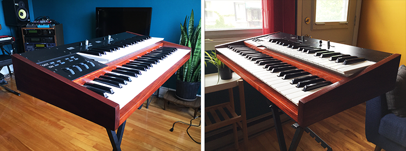
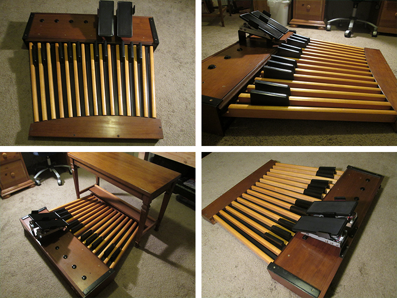
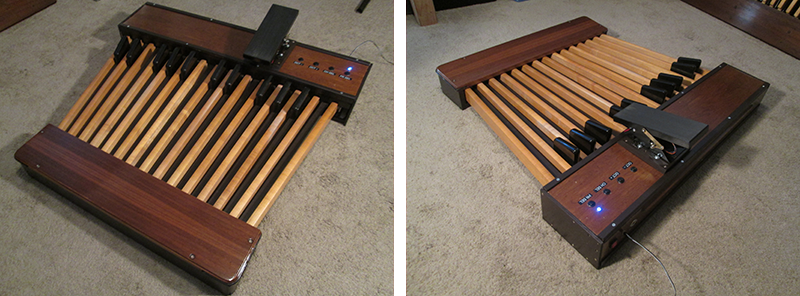
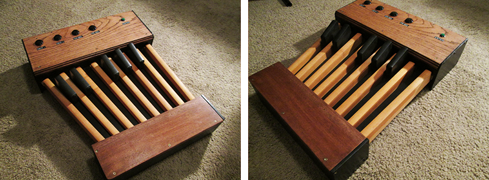
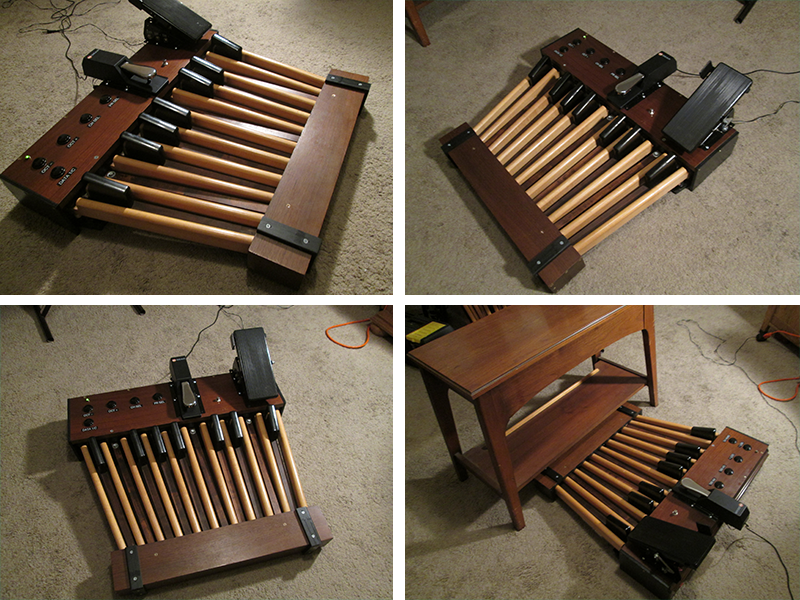

Home Products Mods Setups Extra Contact
Here you will find some of the various controllers we have designed and constructed over the years, ranging from 13-32 note bass pedalboards to full keyboard style controllers all of different styles, and with different types added controls and customizations. All of our products include standard MIDI functions including channel, program and bank select. Links to the user manuals can also be found below for selected models.
----- Customized keyboard controllers -----
MIDI-Quattro keyboard controller:
Dual manual keyboard controller with 49-note lower manual, 37-note upper manual, and 4x mod/pitch wheels

----- 25-Note Pedalboards -----
CX-25P Pedalboard:
25-note pedalboard with dual expression and triple-switch control (rotor, etc)

CX-25P User Manual
W-25 Pedalboard:
25-note pedalboard with expression and switch (rotor control) input

W-25 User Manual
C-25 Pedalboard:
25-note pedalboard with expression and dual-switch input
P-25 Pedalboard:
25-note pedalboard with expression and switch (rotor control) input

G-25 Pedalboard:
25-note pedalboard with expression and switch (rotor control) input
G-25 User Manual
----- 32-Note Pedalboards -----
XP32-PRO Pedalboard:
32-note 'princess style' pedalboard with dual expression pedals
XP32-PRO User Manual
LX32-PRO Pedalboard:
32-note AGO standard pedalboard with dual expression pedals
LX32-PRO User Manual
CX32-PRO Pedalboard:
32-note AGO standard pedalboard with dual expression pedals
----- 13-Note Pedalboards -----
X13-PRO Pedalboard:
13-note standard pedalboard with built in MIDI-merge

13-Note Shorty:
13-note non-standard pedalboard with shortened pedals

----- Custom Pedalboards -----
A18 Custom:
18-note pedalboard with custom range, shortened pedalboard, and extra sustain output
